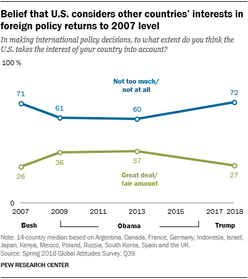
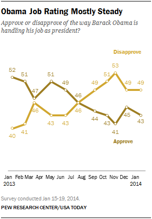
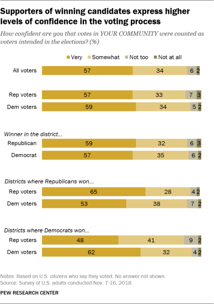
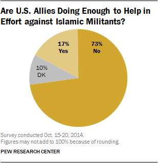
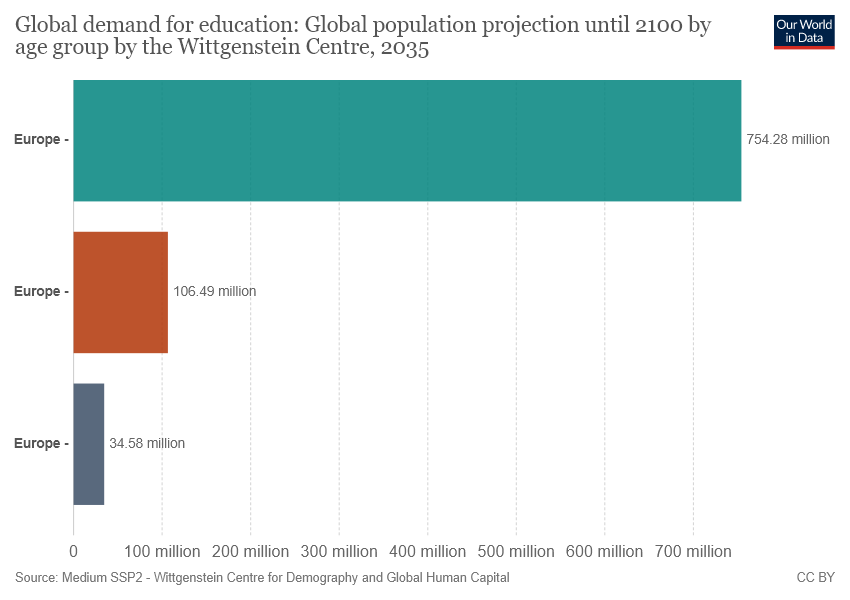
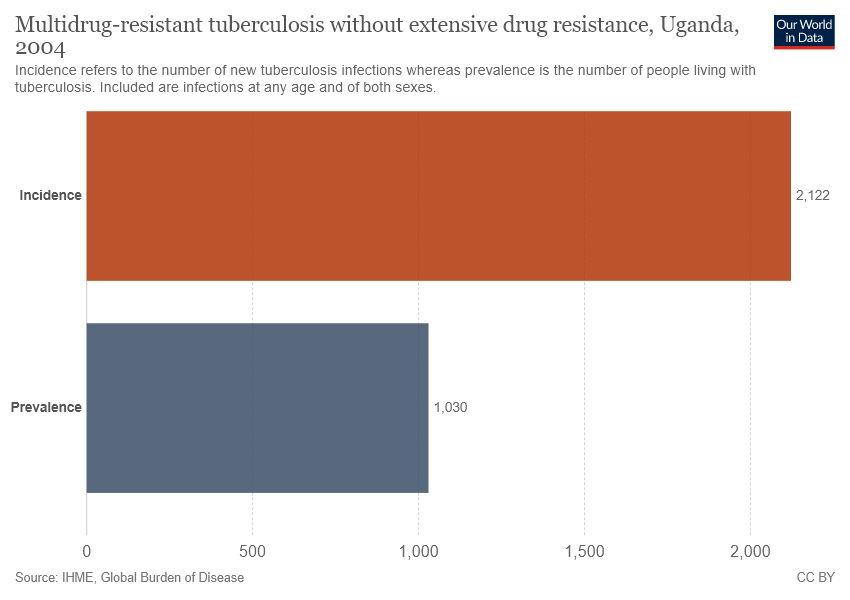

📊 Curated ChartQA Demo Examples
🎯 Hand-Picked Improvements
8 carefully selected examples
showing clear improvements from fine-tuning
✓ Base model was wrong
✓ Fine-tuned model got it right
✓ Clear, demonstrable differences
Example 1 (Dataset Index: 191)

❓ Question: Which region saw the highest proportion of accreditation over the given years?
✓ Ground Truth: Southern Asia
❌ Base Model: Eastern Asia (excluding Japan)
✅ Fine-tuned Model: Southern Asia
Example 2 (Dataset Index: 267)

❓ Question: What's the median value of the green bars?
✓ Ground Truth: 19
❌ Base Model: 59
✅ Fine-tuned Model: 19
Example 3 (Dataset Index: 317)

❓ Question: Is the Very value in All voters more than Somewhat in All voters?
✓ Ground Truth: No
❌ Base Model: Yes
✅ Fine-tuned Model: No
Example 4 (Dataset Index: 360)

❓ Question: How many categories are there in the chart??
✓ Ground Truth: 8
❌ Base Model: 9
✅ Fine-tuned Model: 8
Example 5 (Dataset Index: 391)
❓ Question: What's the difference between two bars?
✓ Ground Truth: 0.044
❌ Base Model: The blue bar (Argentina) is higher than the red bar (Russia), indicating a higher percentage of GDP spent on early childhood education in Argentina compared to Russia in 2012.
✅ Fine-tuned Model: 0.044
Example 6 (Dataset Index: 393)

❓ Question: Is the median value of all bars greater than 500?
✓ Ground Truth: No
❌ Base Model: Yes
✅ Fine-tuned Model: No
Example 7 (Dataset Index: 471)

❓ Question: What percentage we get , if we add red and grey color?
✓ Ground Truth: 27
❌ Base Model: 5.4%
✅ Fine-tuned Model: 27.4
Example 8 (Dataset Index: 495)

❓ Question: What is the difference between Home Furnishings and Domestics merchandise as a share of Bed Bath & Beyond sales worldwide in the year 2020?
✓ Ground Truth: 31
❌ Base Model: Home furnishings accounted for 65% of Bed Bath & Beyond's sales, while domestics merchandise made up 34%.
✅ Fine-tuned Model: 31.4
Generated for demo purposes